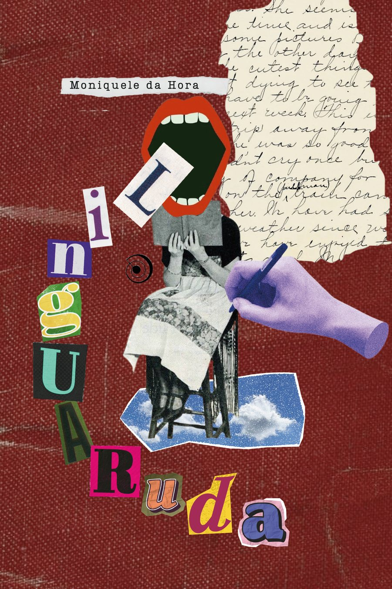

Existem emoções que atravessam o tempo, permanecem em silêncio por anos e, quando encontram as palavras certas, transformam-se em poesia, memória e reflexão.
Em Linguaruda, uma coletânea de crônicas líricas, os versos se entrelaçam para conduzir o leitor em uma jornada marcada por afetos, descobertas, questionamentos e recomeços.
"Uma obra para quem acredita que a literatura não apenas conta histórias, mas também nos ajuda a compreender quem fomos, quem somos e quem ainda podemos nos tornar."
Com uma escrita sensível e intimista, a obra percorre os desafios de crescer, compreender a si mesma e encontrar sentido nas experiências que moldam a existência — explorando temas universais como identidade, pertencimento, amor, perda, amadurecimento e autoconhecimento.
Abre o WhatsApp com uma mensagem pronta — é só confirmar.
Moniquele da Hora
Millennial nascida em 1995, natural da Bahia, típica grapiúna. Formada em Letras (2013), especialista em Oratória e Comunicação Pedagógica, professora de Linguagens e escritora independente.
Neta de Valdete Ferreira, sempre brincou com as palavras e, ainda adolescente, deu vida a um blog que foi seu refúgio por anos e que, hoje, se transforma em obra.
É organizadora da obra institucional Enxergando o outro, encontro a mim e coautora da obra Pétalas e Lâminas 3, ambas publicadas pela Editora Via Litterarum.
Adora acreditar em significados e encontra na literatura uma forma de colorir o mundo com seus pontos de continuação.
1 de –
Quem, nessa loucura chamada vida, nunca perdeu alguma coisa?
Um cachorro.
Um amigo.
Um amor.
Um sonho.
Ou alguém que parecia eterno.
Vivemos acreditando que estamos aprendendo a viver, mas, aos poucos, também aprendemos a perder. Já ouvi dizer que a vida é feita de achados e perdidos.
Eu penso diferente.
A vida é feita de perdas e dos aprendizados que elas insistem em deixar. Nenhuma perda chega pequena, não importa a idade nem o tempo. Não importa se a despedida veio de repente ou se anunciou devagar.
A ausência sempre encontra um jeito de ocupar espaço.
A vida segue um caminho que nunca nos consulta. Ela atravessa histórias, muda destinos e leva pessoas para lugares que os olhos não alcançam. Seja qual for esse lugar, existe uma certeza que permanece deste lado:
A saudade sempre fica com quem permanece.
Então, a todos que já passaram pela catraca da perda, desejo tempo. Tempo para o coração respirar. Tempo para a alma reorganizar os próprios cômodos. Tempo para que a dor encontre um lugar onde descansar.
E que, pouco a pouco, o tempo plante flores exatamente onde hoje são lacunas. Aos que ainda não atravessaram essa catraca, desejo delicadeza. Porque, mais cedo ou mais tarde, a vida nos apresenta a ausência. E quando isso acontecer, que nunca lhes falte amor suficiente para transformar saudade em lembrança.
No fim, talvez a vida nunca tenha sido feita de chegadas ou partidas. Talvez ela seja feita daquilo que continua vivendo dentro da gente, mesmo depois que tudo parece ter ido embora. Porque, no fundo, o tempo nunca leva o amor — ele apenas ensina outra maneira de carregá-lo.
Às vezes me pergunto se as mulheres são metades, fases ou atemporais. Também me pergunto por que carregamos essa necessidade de descobrir quem somos repetidas vezes, como se a resposta mudasse sempre que a vida muda de estação.
Talvez a gente saiba exatamente o que quer ou talvez mude de ideia porque aprendeu que crescer também é isso. Às vezes penso que mulher é um universo inteiro de contradições, tão lúcida que enlouquece de tanto pensar.
Questiono-me se já nascemos felinas ou se aprendemos a afiar as garras durante o caminho. Se já chegamos ao mundo feitas de fases ou se vamos florescendo em versões diferentes até encontrar — ou simplesmente aceitar — a própria paz.
Nós, mulheres...
Nunca sabemos se a batata faz bem para o bumbum ou mal para o estômago.
Se ficamos.
Se partimos.
Se atravessamos o caos ou se, de vez em quando, resolvemos morar dentro dele.
Nunca sabemos se odiamos tempestades ou se somos nós quem as convocamos. Porque mulher tem dessas perguntas que nunca encontram ponto final.
Hoje é lua.
Amanhã amanhece sol.
Na semana que vem?
Quem sabe…
Talvez já tenha virado girassol.
Acredito justamente que seja essa a beleza.
Entre a delicadeza e a força. Entre a calma e a tempestade. Entre a lucidez e a bagunça dos pensamentos. É nesse espaço que nasce o desejo de ser ainda mais mulher. De enfrentar as próprias batalhas, de atravessar os próprios medos ou de fazer as pazes com os próprios demônios até descobrir que, no fim, não precisamos de respostas para todos os porquês.
Basta a coragem de sermos quem somos. Sem rótulos e sem explicações na imensidão de ser mulher.
Viver é encontrar desculpas para seguir.
Talvez a vida seja exatamente isso; as pessoas que conquistamos pelo caminho, o afago em um cachorro de rua, os aprendizados que levam dias e as risadas que acontecem em segundos.
Viver também é celebrar a felicidade de quem amamos, respeitar a singularidade do outro e descobrir que a solidão nem sempre é ausência. Às vezes, ela também é abrigo.
A vida mora nessas pequenas coisas:
No fim de um domingo.
Nos amigos antigos.
Nos amores que chegam sem pedir licença.
É sobre isso que os livros quase nunca nos ensinam, não nos explicam como cair, embora a queda seja inevitável. Nem como levantar, mesmo sabendo que é desse movimento que seguimos em frente.
Às vezes penso que viver deveria vir acompanhado de placas de trânsito.
Vire à direita para encontrar um novo amor.
À esquerda, deixe para trás o que já não caminha com você.
Siga em frente.
E é proibido estacionar para desistir.
Porque viver é isso. É vestir outra vez a roupa da coragem depois de tantos arranhões, é escolher ser luz quando tudo parece escuro demais para acreditar no amanhã.
No fim, viver talvez seja apenas uma teimosia bonita, daquelas de quem continua acreditando que o bem sempre encontra um jeito de voltar para casa.
Gostou? O livro tem 63 crônicas como essas.
Quero ler o livro todoOs exemplares da pré-venda são entregues no evento de lançamento, dia 14/10, no Centro de Cultura Adonias Filho, em Itabuna. Quem não puder ir combina outra data pelo WhatsApp.
Pix (principal) ou link de pagamento no cartão de crédito.
É combinada individualmente com a autora pelo WhatsApp, depois da compra.
Sim, a pré-venda tem política de cancelamento — fale pelo WhatsApp.
Linguaruda · Moniquele da Hora · Via Litterarum, 2026 · @moniqueledahora